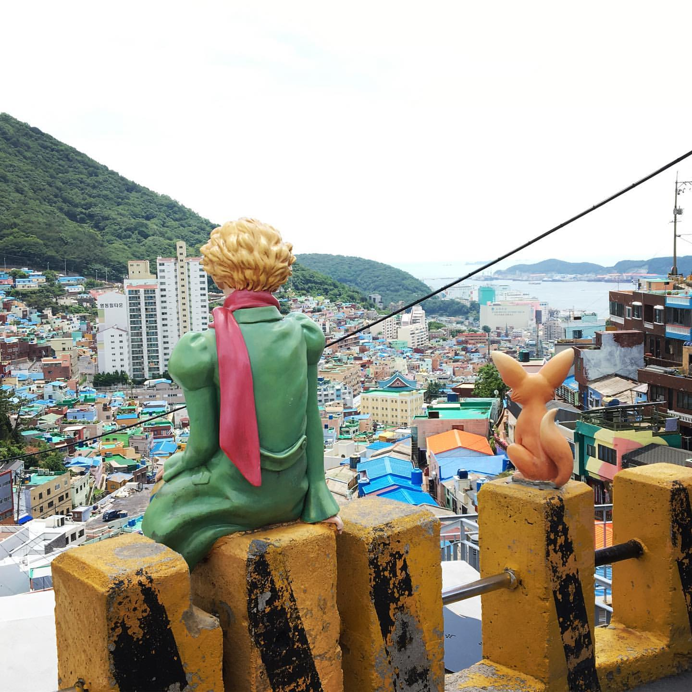

Go the the home!
Travel the Busan!
Introduce the Gamcheon Culture Village

Gamcheon Culture Village is a village located in Gamcheon-dong, Saha-gu, Busan, in the administrative district. In the 1950s, Taegeukdo followers and Korean War refugees gathered together. There is still the headquarters of Taegeukdo. It has been known as a backward neighborhood named Taegeukdo Village, but as part of the city's revival based on "preservation and regeneration," an "town art project" was held in Busan where artists and residents in the Busan area pooled together to paint murals on the walls or walls of buildings, making it one of Busan's most popular tourist destinations.
Select the place where you want to see in Busan
- Haeundae
- Gwanganri
- International market
- Gamcheon Culture Village
- Samrak Park